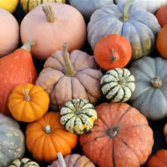

da dom 18 ott a sab 24 ott
32^ Festa delle zucche
DOMENICA 18 OTTOBRE – Aspettando la festa 09.15 3^ Giornata delle Associazioni d’Arma e Combattentistiche “Tra memorie e tradizioni” (Circolo Anziani) SABATO 24 OTTOBRE Dalle 14.30 alle 17.00 Salita al campanile 17.00 Apertura 32^ Festa delle Zucche con saluto delle autorità…
 Indicazioni
Indicazioni
- Costi e prenotazioni
- Costo non indicato · Prenotazione non indicata
- Programma
- Programma da verificare. Apri la fonte ufficiale per orari e possibili aggiornamenti.
- In caso di maltempo
- Nessuna indicazione specifica pubblicata.
- Note
- Acquisito automaticamente dalla fonte.
L’EVENTO
Descrizione completa
DOMENICA 18 OTTOBRE – Aspettando la festa
09.15 3^ Giornata delle Associazioni d’Arma e Combattentistiche “Tra memorie e tradizioni” (Circolo Anziani)
SABATO 24 OTTOBRE
Dalle 14.30 alle 17.00 Salita al campanile
17.00 Apertura 32^ Festa delle Zucche con saluto delle autorità (Piazza della Vittoria)
Mostra lavori del plesso scolastico di Cordenons e visita alle vetrine dei commercianti di Cordenons
Apertura Torre Arrampicata “Climbing Tower” (altezza massima 8 metri)
17.00 Apertura chioschi enogastronomici
17.00 Castagnata a cura dell’Ass. AVIS – AIDO e il Circolo Anziani – Cordenons
18.00 La Lucciolata a favore della Via di Natale – Partenza e arrivo in Piazza della Vittoria
20.00 Serata musicale (Piazza della Vittoria)
DOMENICA 25 OTTOBRE
08.30 5a ed. “A Ruota Libera” cicloturistica aperta a tutti a cura della FIAB Pordenone
09.00 Apertura chioschi enogastronomici con stand di commercianti, produttori, hobbisti, artigiani (Piazza della Vittoria)
Castagnata a cura dell’Ass. AVIS – AIDO e il Circolo Anziani – Cordenons
Mercatino dei bambini e salita al campanile
10.00 “Pompieropoli” con la consegna del diploma “Giovane Pompiere”.
dalle 10.00 “Intaglio delle zucche” per i bambini e le famiglie a cura della Biblioteca Civica del Comune di Cordenons (Informazioni e prenotazioni 0434.930825 oppure mail: biblioteca@comune.cordenons.pn.it)
11.30 Apertura ristorazione e degustazione con menù a tema (presso Centro Parrocchiale Santa Maria Maggiore, Piazza della Vittoria, Cordenons)
20.00 Chiusura manifestazione
Info: Segreteria Pro Cordenons 0434.581365 / proloco.cordenons@gmail.com
IL PROGRAMMA
Programma e orari
Appuntamenti raccolti dalle fonti elencate. Dove manca un orario, non è ancora disponibile in questa scheda.
Programma pubblicato
- 09.15 3^ Giornata delle Associazioni d’Arma e Combattentistiche “Tra memorie e tradizioni” (Circolo Anziani)
- 17.00 Apertura 32^ Festa delle Zucche con saluto delle autorità (Piazza della Vittoria)
- 17.00 Apertura chioschi enogastronomici
- 17.00 Castagnata a cura dell’Ass. AVIS – AIDO e il Circolo Anziani – Cordenons
- 18.00 La Lucciolata a favore della Via di Natale – Partenza e arrivo in Piazza della Vittoria
- 20.00 Serata musicale (Piazza della Vittoria)
- 08.30 5a ed. “A Ruota Libera” cicloturistica aperta a tutti a cura della FIAB Pordenone
- 09.00 Apertura chioschi enogastronomici con stand di commercianti, produttori, hobbisti, artigiani (Piazza della Vittoria)
- 10.00 “Pompieropoli” con la consegna del diploma “Giovane Pompiere”.
- 11.30 Apertura ristorazione e degustazione con menù a tema (presso Centro Parrocchiale Santa Maria Maggiore, Piazza della Vittoria, Cordenons)
- 20.00 Chiusura manifestazione
INFORMAZIONI UTILI
Prima di partire
- Controllare la fonte prima di partire.
ORGANIZZAZIONE